Traducción de la sección 2 del manual GIM6010-8 rev 2.2 (págs. 8–14 del original).
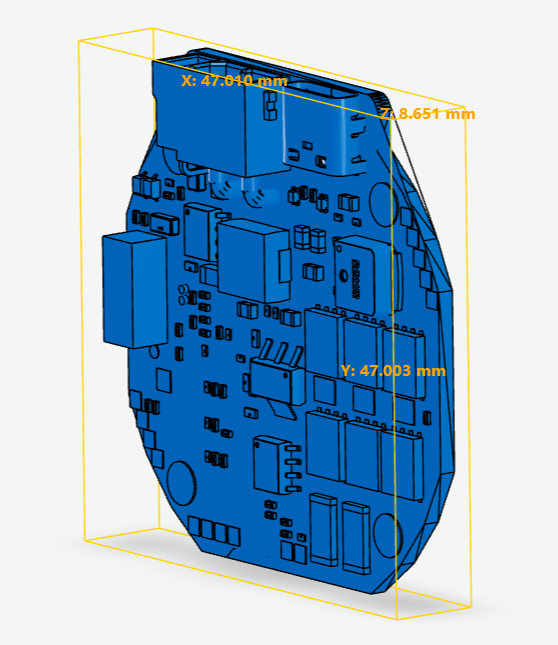
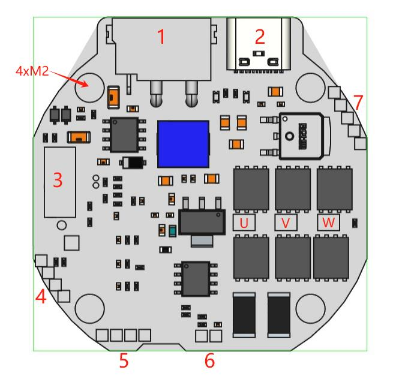
| N.º de interfaz | Definición |
|---|---|
| 1 | Terminal integrado de alimentación de 15–60 V y comunicación CAN |
| 2 | Conector Type-C de depuración y de comunicación con el software de PC |
| 3 | Ranura de expansión de interfaces (permite añadir RS485, EtherCAT, radiocontrol, pulso/dirección, control de acelerador, etc.) |
| 4 | Interfaz SWD de depuración y descarga |
| 5 | Interfaz del segundo encoder (admite I²C y UART) |
| 6 | Interfaz de temperatura del motor (NTC) |
| 7 | Interfaz de freno de retención / resistencia de frenado, alimentación de 12 V e interfaces de los finales de carrera mínimo y máximo |
| U/V/W | Orificios de soldadura de los tres devanados de fase |
| 4×M2 | Orificios de montaje |
| Parámetro | Valor |
|---|---|
| Tensión nominal | 15–48 V CC |
| Tensión mínima / máxima | 12 / 72 V CC |
| Corriente nominal | 6 A |
| Corriente máxima de línea | 30 A |
| Corriente máxima de fase | 120 A |
| Consumo en reposo | < 10 mA |
| Velocidad máxima del bus CAN | 1 Mbps |
| Velocidad del Type-C | 10 Mbps |
| Resolución del encoder | 14 bits (valor absoluto de una vuelta) |
| Temperatura ambiente de trabajo | −20 °C a 70 °C |
| Temperatura de alarma del motor | 90 °C (ajustable) |
| Temperatura de alarma de la placa del driver | 90 °C (ajustable) |
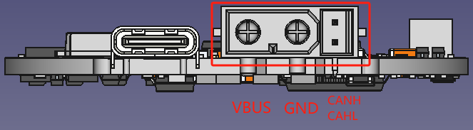
El terminal montado en placa es el modelo XT30PB(2+2)-M y el del lado del cable el XT30(2+2)-F, ambos de la marca AMASS. En modo PWM, CANH es la entrada de la señal PWM; en modo pulso, CANH es la entrada de la señal de pulso y CANL la entrada de la señal de dirección. Tenga en cuenta que, en las versiones que admiten RS485, CANH/CANL son también RS485 A/B.
El Type-C sigue la especificación estándar de cable de datos: sirve cualquier cable Type-C de datos habitual de PC o de teléfono móvil.
Esta ranura sigue el diseño que se describe a continuación y ofrece numerosas interfaces entre placas, de modo que un tercero puede desarrollar cualquier placa de expansión. Tenga en cuenta que las versiones de hardware 3.9 y posteriores ya no incluyen esta interfaz de expansión.
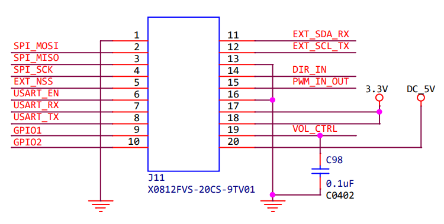
Un tercero puede interactuar con el driver mediante SPI, USART, I²C, PWM, ADC, GPIO, etc., para implementar todo tipo de funciones de expansión.
El conector montado en la placa es el modelo X0812FVS-20CS-9TV01 (hembra) y el de la placa de expansión el X0812WVS-20AS-9TV01 (macho), ambos de la marca Xingkun (星坤).
| Hembra X0812FVS-20CS-9TV01 | Macho X0812WVS-20AS-9TV01 |
|---|---|
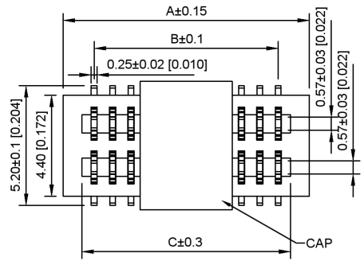 |
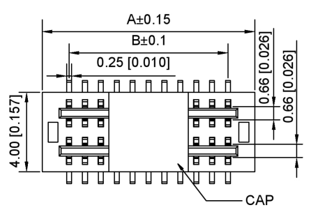 |
Son orificios para pines con paso de 2 mm; el usuario puede soldar una tira de pines rectos de 2 mm, como se ve en las figuras siguientes.
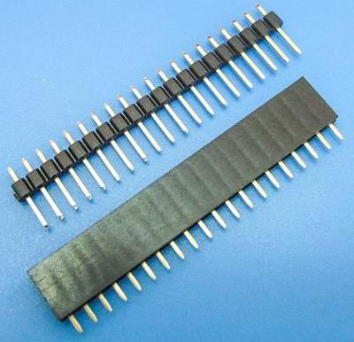
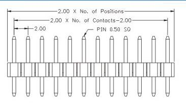
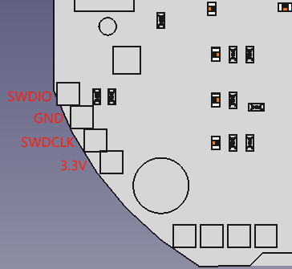
Son orificios para pines con paso de 2 mm; el usuario puede soldar una tira de pines rectos de 2 mm (véase el apartado 2.4.4).
Esta interfaz permite comunicarse con el segundo encoder mediante USART (TX/RX) o I²C (SCL/SDA).
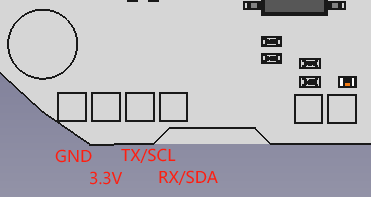
El motor lleva incorporada una resistencia NTC de 10 kΩ; sus dos hilos se sueldan a MOT_TEMP y GND, sin orden concreto.
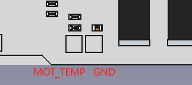
De los cinco orificios del conector que muestra la figura, los dos superiores son la interfaz del freno de retención o de la resistencia de frenado. Son orificios para pines de 2 mm de paso; el usuario puede soldar una tira de pines rectos de 2 mm (véase el apartado 2.4.4).
Cuando se usa como interfaz de freno de retención, el driver entrega por ella una corriente continua mientras está alimentado, de modo que el freno permanece abierto y el motor puede girar con normalidad. Si el driver se queda sin alimentación, esa corriente cesa, el freno se cierra y el motor queda bloqueado en la posición en la que estaba.
Cuando se usa como interfaz de resistencia de frenado, puede conectarse una resistencia de frenado externa (también llamada resistencia de descarga): cuando la fuerza contraelectromotriz supera la tensión umbral, la corriente se disipa por esa resistencia, lo que evita que no se pueda frenar de emergencia o que la contraelectromotriz dañe el driver.
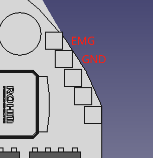
El driver ofrece dos interfaces de final de carrera y suministra 12 V para alimentarlos. Son orificios para pines de 2 mm de paso; el usuario puede soldar una tira de pines rectos de 2 mm (véase el apartado 2.4.4).
LW1 es el final de carrera de posición mínima y LW2 el de posición máxima. Pueden conectarse interruptores de dos hilos o interruptores NPN de tres hilos.
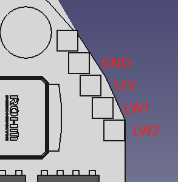
| N.º | Componente | Modelo / especificación | Cantidad |
|---|---|---|---|
| 1 | MCU | N32G455 | 1 |
| 2 | Chip driver de puerta | FD6288Q | 1 |
| 3 | Chip de encoder magnético | MA732, absoluto de 14 bits | 1 |
| 4 | MOSFET | JMSH1004NG, 100 V / 120 A | 6 |